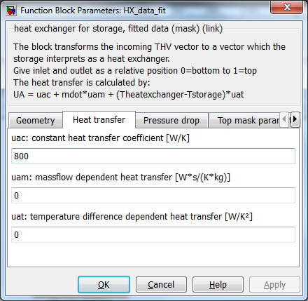
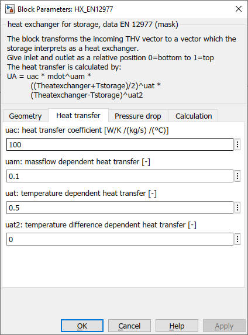
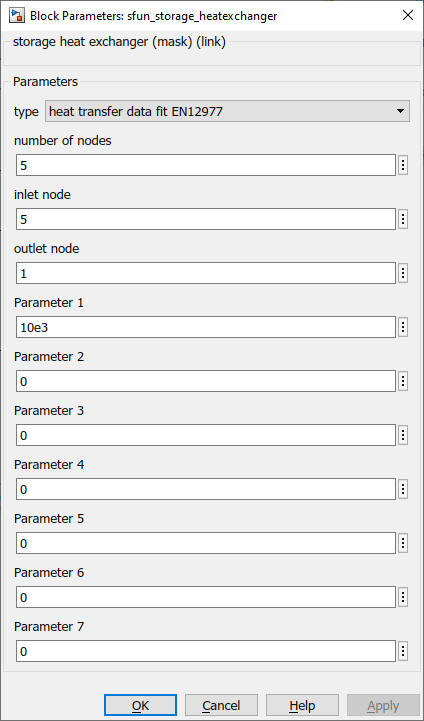

Path: CARNOT/Storage/Thermal/Storage_Ports
HX_data_fit
heat exchanger model for linear data fit
HX_data_fit_stratified as above, but for
stratified charging
HX_EN12977
heat exchanger model for data fit according to TRNSYS Type 340 model
HX_EN12977_stratified as above, but for
stratified charging
HX_tube theoretical
model of a smooth tube heat exchanger
HX_tube_stratified
as above, but for stratified charging
HX_finned_tube
theoretical model of a finned tube heat exchanger
HX_finned_tube_stratified as above, but for stratified charging
Path:
CARNOT/Storage/Thermal/Storage_Ports
Purpose
Heat exchanger
models
for the thermal storage model "Storage_Tnode" used in
the Storage_Type_N blocks.
Description
The incoming THB
is transformed to a vector giving the heating power to each node of the storage.
The
heat exchanger models use
the basic block
"sfun_storage_heatexchanger"
in
CARNOT\Basic\Thermal_Models. In this block the s-function
"storage_heatexchanger" solves the different equations for the heat transfer.
Inputs and outputs
|
Port |
Index |
Use |
Unit |
|
1 |
1 ... NODES |
temperatures of storage nodes |
degree Celsius |
|
2 |
1 |
inlet temperature |
degree Celsius |
|
|
2 |
massflow |
kg/s |
|
|
3 |
pressure |
Pa |
|
|
4 |
fluid ID (defined in carlib.h) |
|
|
|
5 |
mixture (defined in carlib.h) |
Structure of the output vector
|
Port |
Index |
Use |
Unit |
|
1 |
1 ... NODES |
power entering
node from outside, |
W |
|
2 |
1 ... NODES |
temperature of the heat exchanger at node, vector with one element per node |
degree Celsius |
Parameters
All
parameter are non- tunable parameters (values are initialized at simulation
start and cannot change during the simulation).
Heat transfer calculation
The power
of the heat exchange per node is calculated by the mathematical function derived
from
Replace (Tnode-Thx) by teta, than dThx is -dteta
Integrate
from inlet position to outlet position.
The equation uses the upwind scheme from Patankar [Patankar 1981] so the inlet
temperature of the heat exchanger node is the temperature of the node upwards in
flow direction.
Exponentiate and solve for teta(out)
Replace teta by (Tnode - Thx) and solve for
Thx(out), the outlet temperature of the heat exchanger in one node
QdotHX(node)
=
UA*(Thx(in)-Thx(node)) / log((Thx(in)-Tstore(node)/(Thx(node)-Tstore(node)))
with
cp
:
specific heat capacity
in
J/(kg*K)
Thx(in)
:
inlet temperature of heat exchanger node
in
degree Celsius
Thx(node)
:
temperature of heat exchanger node
in
degree Celsius
Tstore
:
temperature of the storage node
in
degree Celsuis
The heat transfer calculation is done by an s-function in the underlying model sfun_storage_heatexchanger.
The ports also model stratified discharging for inlet below outlet. In this
case the port starts discharging the storage if the flow temperature reaches a
node where the temperature is higher.
For
undefined heat exchangers
(Port_ID not listed
below)
the
model
takes a default value of 500 W/K
Heat exchanger models and heat transfer equations
Smooth tube heat exchanger
(theoretical model)
portID = 201
portID =
301 for
stratified charging
Finned tube heat exchanger (theoretical model)
portID = 202
portID =
302
for
stratified charging


Heat
transfer calculation [Wagner 1991]:
Nu(outside) = 0.5 * (Gr
* Pr)^0.25
U(outside)
= Nu(outside)*condFluid
/ (Dpipe * PI/2)
U(inside) = Nu(inside)*condFluid / Dpipe
with
Ahx : Heat exchanger surface in m²
condFluid : thermal_conductivity of fluid in W/m/K
Gr : Grashof number of the fluid for the inlet temperature of heat
exchanger node and the storage node temperature.
The function Grashof is available in
carlib library.
Nu : Nusselt number for the heat transfer inside or outside of the pipe.
Pr : Prandtl number of the fluid at mean temperature (average between heat
exchanger inlet and storage node).
The function Prandtl is available in carlib
library.
Re : Renolds number of the fluid flow inside of the Pipe.
The function Reynolds is available in
carlib library.
U : Heat transfer in W/m²/K
UA : Integral heat transfer in W/K
Finned tube additionally have
the fin heat transfer [Wagner 1991] which means a correction of the smooth tube
heat transfer:
m = (2*U/(Condwall*Sfin)) ^0.5
For smooth tube
heat exchangers this gives:
U(tube)
= 1 / (1/U(outside) + Swall/condWall
+
1/U(inside))
And for finned
tubes the heat transfer is:
U(finned
tube) = 1 / (1/U(outside_fin) + Swall/condWall
+ 1/U(inside))
For the integral heat
transfer the exchanger surface has to be integrated:
with
Dpipe : outer diameter of heat exchanger pipe in m
(P1)
Swall : wall thickness
in m
(P2)
Lpipe : length of pipe
in m
(P3)
condWall : thermal
conductivity of heat exchanger wall in W/(m*K)
(P4)
Dfin : total
diameter of pipe with fins in m
(P5)
Sfin : wallthickness fin in m
(P6)
XNfin : number of fins per length in 1/m
(P7)
Heat
exchanger with a heat transfer fitted to measurement
portID = 203
portID
= 303 for stratified charging

Equation for the heat
transfer :
UA =
UAC + mdot*UAM
+ (Theatexchanger-Tstorage)*UAT
with
UAC constant
heat transfer rate
in
W/K
(P1)
UAM
mass-flow dependent heat transfer in
W*s/(kg*K)
(P2)
UAT
temperature dependent heat transfer in W/K/°C
(P3)
Heat
exchanger with a heat transfer from EN 12977 test reports /
TRNSYS Type 340
portID = 204
portID
= 304 for stratified charging

Equation for the
heat transfer (from
TRNSYS Type 340
and
UA
= UAC * mdot^UAM * ((Theatexchanger+Tstorage)/2)^UAT
* abs(Theatexchanger-Tstorage)^UAT2
with
UAC : heat transfer rate W/K / (kg/s) / °C
(P1)
UAM : mass-flow dependent exponent of the heat transfer
(P2)
UAT : temperature dependent exponent of the heat transfer
(P3)
UAT2
: temperature
difference
dependent exponent of the heat transfer
(P4)
To avoid numerical conflicts the power of the average temperature ((Theatexchanger+Tstorage)/2)^UAT is only calculated for an average temperature above 1 °C. The result is set to 1 for values below.
S-function sfun_storage_heatexchanger
As mentioned above the heat transfer calculation of the different heat exchanger models is done in an s-function.

201 smooth
tube heat exchanger theoretical model
301 smooth
tube heat exchanger theoretical model stratified charging
202 finned
tube heat exchanger theoretical model
302
finned tube heat exchanger theoretical model stratified charging
203
heat transfer fitted to measurement
303
heat transfer fitted to measurement model for stratified charging
Literature
TRNSYS Type 340,
2006
Drück, Harald : Mathematische Modellierung und experimentelle Prüfung von
Warmwasserspeichern für Solaranlagen, ISBN 978-3-8322-6215-0, Shaker Verlag,
Mai 2007
EN 12977-3: Thermal solar systems and components - Custom built systems -
Part 3: Performance test methods for solar water heater stores; 2018
Wagner: Waermeuebertragung, Vogel-Verlag, 1991
Characteristics
Direct Feedthrough Yes
Continous
states None
Discrete states
None
Sample
time Inherited
from driving block
Vectorized No